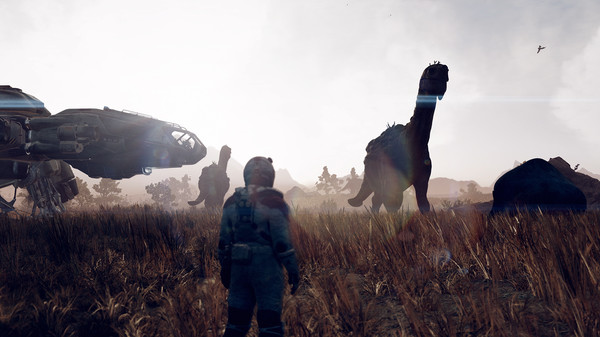

Starfield is the first new universe in 25 years from Bethesda Game Studios, the award-winning creators of The Elder Scrolls V: Skyrim and Fallout 4. In this next generation role-playing game set amongst the stars, create any character you want and explore with unparalleled freedom as you embark on an epic journey to answer humanity’s greatest mystery.
The year is 2330. Humanity has ventured beyond our solar system, settling new planets, and living as a spacefaring people. From humble beginnings as a space miner, you will join Constellation – the last group of space explorers seeking rare artifacts throughout the galaxy – and navigate the vast expanse of the Settled Systems in Bethesda Game Studios’ biggest and most ambitious game.
Will be released on:
- PC
- Xbox Series S
- Xbox Series X